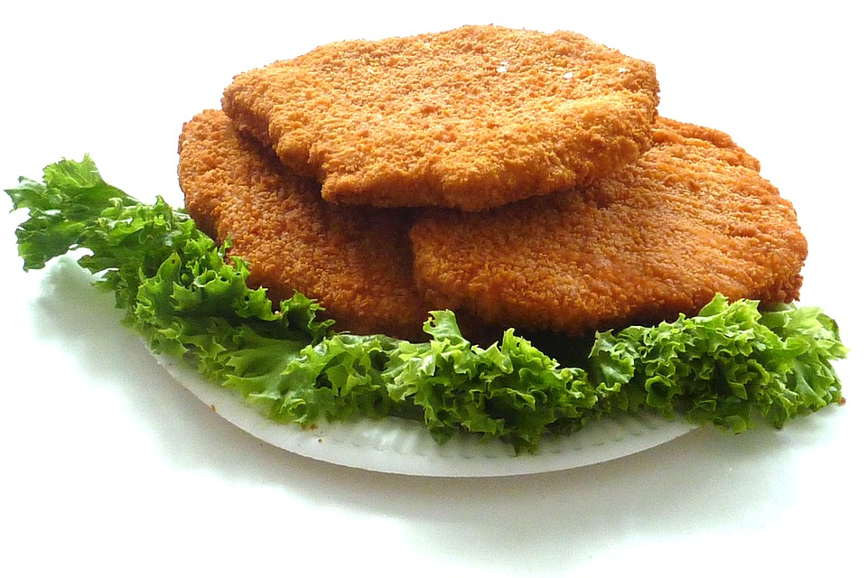

Viimeviikkoisen Flooran päivän myötä yliopistolla siirryttiin kesäkauteen. Opiskelijat viettävät aikansa raatamalla alipalkattuja kesätöitä, muutama onnekas myös lomailemalla tai raatamalla kohtuullisesti palkattuja kesätöitä. Edes Unicafé Exactumissa kiire ei kesälläkään hellitä, vaan matematiikan laitoksen kellarissa suunnitellaan kuumeisesti uusia ruokalajeja seuraavalle lukuvuodelle.
Luotettavien tietojen mukaan mukana työssä on Tyyppiarvon blogisti Harhainen estimaatti, joka toivoo ruokalistoille erityisesti enemmän matematiikkavitsejä. HE paljasti Tyyppiarvolle etukäteen kymmenen ensi syksyn suosituinta annosta:
Banach-Tarskin tuulihatut Yksi tuulihattu, josta sopivalla tavalla paloiteltuna riittää syötävää varmasti koko laitokselle.
Cauchyn kebakot Ensin puolikas kebakko, sitten neljäsosa, sitten kahdeksasosa… Syö niin monta kuin jaksat.
Curry-kanaa Cantorin tapaan Kananrintaa ilman keskikolmannesta.
Fermat’n focaccia Elegantti alkupala, jonka resepti ei valitettavasti mahdu tämän jutun marginaaliin.
Fisher’s fingers Leivitettyjä puikkoja. Sisältö kiinteä, mutta tuntematon.
Fubinin fajitat Syö pohja ensin, täyte ensin tai yhtä aikaa - valinta on sinun.
Lindelöfin lihakeitto Perunaa, porkkanaa ja keittolihaa, peitellään numeroituvalla määrällä tilliä.
Mandelbrotin mustikkapiirakka Läheltä katsottuna herkullista, kaukaa katsottuna - taas herkullista.
Studentin teeleipä Sopivan makea keksi, jota voi tarjota pienemmillekin porukoille.
Weierstrassin min-max-makkarat Isoja nakkeja, pieniä nakkeja, kompaktissa paketissa.